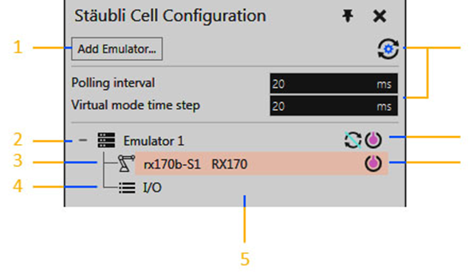
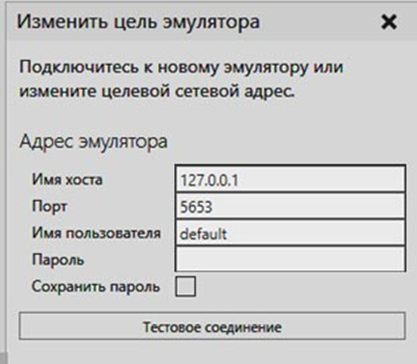
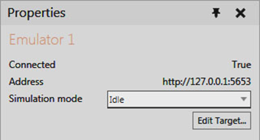
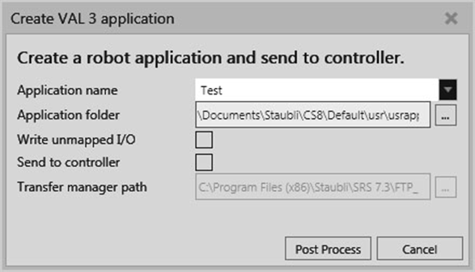
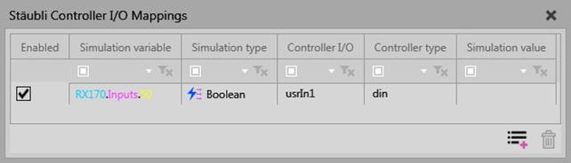
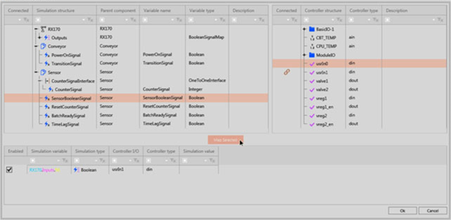

Конфигурация ячейки Stäubli
Панель Конфигурация ячейки Stäubli — это основная панель аддона Stäubli.

1. |
Добавить эмулятор |
|---|---|
2. |
Подключение эмулятора |
3. |
Сопоставление робота |
4. |
Сопоставление ввода/вывода |
5. |
Дерево конфигурации ячейки |
6. |
Включить/выключить сопоставление робота |
7. |
Режим симуляции и подключение/отключение эмулятора |
8. |
Настройки времени синхронизации |
Добавить эмулятор
Кнопка «Добавить эмулятор» отображает область задач «Редактировать цель эмулятора», которая позволяет протестировать и добавить новое подключение эмулятора в дерево конфигурации ячейки.

Примечание: Вы не можете добавить новое соединение, если имя хоста/адрес и номер порта совпадают с существующим соединением эмулятора.
Настройка времени синхронизации
Кнопка Synchronization Timing Settings отображает список глобальных настроек для всех подключенных эмуляторов. Они контролируют плавность улавливания движений робота и реакцию на них как в симуляции, так и в программе робота VAL 3, запущенной на подключенном эмуляторе. Сюда также входит частота изменения значений входов/выходов.
Значение по умолчанию 20 мс используется как для интервала опроса, так и для временного шага виртуального режима. Эти настройки сохраняются не с планировкой, а с пользовательскими настройками вашего приложения.
Дерево конфигурации ячейки
В дереве конфигурации ячеек показаны соединения эмулятора, а также сопоставления робота и ввода-вывода.
Уровень 1 — Соединения с эмулятором
Соединение с эмулятором всегда обозначается уникальным именем, режимом симуляции и отображается с помощью кнопки, которая управляет состоянием соединения с эмулятором. Если режим симуляции не находится в режиме ожидания и симуляция сброшена, вы можете подключить/отключить эмулятор, чтобы включить/выключить синхронизацию, не меняя режим симуляции.
Когда вы щелкаете правой кнопкой мыши соединение эмулятора, у вас есть следующие параметры.
Название |
Описание |
|---|---|
Изменить цель |
Открывает панель задач Изменить цель эмулятора, что позволяет редактировать сетевой адрес эмулятора. |
Соединить |
Подключает аддон Stäubli к эмулятору. |
Редактировать сопоставления ввода/вывода |
Открывает Редактор сопоставлений ввода/вывода , тем самым позволяя сопоставлять переменные симуляции с физическим вводом/выводом контроллера. |
Отключить |
Отключает аддон Stäubli от эмулятора. |
Удалить |
Удаляет эмулятор из надстройки Stäubli. |
Показать сопоставления ввода/вывода |
Показывает панель Отображение входов/выходов контроллера Staubli. |
Уровень 2 — Сопоставление робота
Подключенный эмулятор связан по крайней мере с одним роботом, настроенным в контроллере Stäubli, который может быть подключен/сопоставлен с роботом в трехмерном мире. Отображение робота указывает имя робота в контроллере Stäubli, имя его отображенного робота в трехмерном мире и отображается с помощью кнопки, которая управляет состоянием соединения между роботами.
Если щелкнуть правой кнопкой мыши сопоставление робота, у вас появятся следующие параметры.
Название |
Описание |
|---|---|
Изменить подключенного робота |
Открывает панель задач Изменить подключенного робота, что позволит вам сопоставить робота в контроллере Stäubli с роботом в трехмерном мире. |
Программа постобработки |
Открывает панель задач Создать приложение VAL 3, что позволит вам создать приложение VAL 3. |
Уровень 3 - Входы и выходы
Подключенный эмулятор имеет собственный набор входов и выходов, которые представляют собой отображения ввода-вывода для переменных симуляции и физический ввод-вывод контроллера Stäubli.
Если щелкнуть правой кнопкой мыши сопоставление ввода-вывода, у вас появятся следующие параметры.
Название |
Описание |
|---|---|
Редактировать сопоставления ввода/вывода |
Открывает Редактор сопоставлений ввода/вывода, тем самым позволяя сопоставлять переменные моделирования с физическим вводом/выводом контроллера. |
Показать сопоставления ввода/вывода |
Показывает панель Отображение входов/выходов контроллера Staubli. |
Характеристики
Панель Свойства позволяет просматривать и редактировать атрибуты выбранного элемента на панели Конфигурация ячейки Stäubli.
Подключение эмулятора

Название |
Описание |
|---|---|
Подключено |
Указывает состояние соединения. |
Адрес |
Указывает сетевой адрес эмулятора. |
Режим симуляции |
Определяет режим взаимодействия надстройки Stäubli и подключенного контроллера во время моделирования. Idle Контроллер Stäubli и симуляция независимы друг от друга. Это позволяет использовать контроллер со стороны симуляции для обучения робота и выполнения его программы. Как правило, этот режим используется для быстрого обучения и моделирования программы робота в 3D мире, а затем для постобработки результатов. Virtual Контроллер Stäubli можно использовать для обучения робота в трехмерном мире и имитации программы VAL 3. Это обеспечивает высокую синхронизацию, поскольку выполнение контроллера Stäubli управляется R-Pro и использует часы симуляции для временных шагов. Как правило, этот режим используется для целей тестирования и визуализации, особенно с большими плинировками, поскольку симуляция может эффективно выполняться в виртуальном или реальном времени на разных скоростях. Polling Аналогично виртуальному режиму, но контроллер Stäubli будет работать в режиме реального времени, используя свои собственные часы. Как правило, этот режим существует для обратной совместимости и подходит для целей визуализации. Симуляция должна работать в реальном времени со скоростью в 1х от нормальной скорости. Мы рекомендуем использовать Virtual вместо Polling. Jogging Контроллер Stäubli отключил питание манипулятора робота, но все еще может получать обновления совместных значений робота в трехмерном мире. Как правило, этот режим используется для взаимодействия с роботом с помощью его контроллера на стороне симуляции для обучения позициям и записи их непосредственно в приложение VAL 3. Подсказка: В режиме Jogging вы можете запустить робота без запуска симуляции. Не забудьте отключить питание манипулятора робота в контроллере Stäubli перед переходом в режим Jogging. |
Изменить цель |
Открывает панель задач Изменить цель эмулятора , что позволяет редактировать сетевой адрес эмулятора. |
Сопоставление робота
Если робот в контроллере Stäubli не привязан к роботу в 3D-мире, Кнопка Карта для симулятора робота будет отображаться на панели свойств. Эта кнопка открывает панель задач Изменить подключенного робота , что позволяет вам сопоставить робота в контроллере Stäubli с роботом в 3D-мире.
Сопоставление ввода/вывода

Внешний вид такой же, как у панели Отображение входов/выходов контроллера Staubli.
Изменить подключенного робота
Панель задач «Изменить подключенного робота» позволяет сопоставить робота в контроллере Stäubli с роботом в трехмерном мире. Действие включает в себя выбор робота в трехмерном мире, а затем использование кнопки «Применить» или «Отмена», чтобы подтвердить или отменить изменение.

Пожалуйста, обратите внимание на следующие рекомендации:
·Вы не можете сопоставить роботов с разным количеством суставов.
·При выборе робота в 3D-мире:
oВ настоящее время сопоставленный робот отображается нормально и не выделяется.
oСовместимые роботы выделены желтым цветом.
oНесовместимые роботы выделены серым цветом.
oНовый выбранный робот выделяется зеленым цветом.
oЩелкнув пустое место в 3D-мире, вы очистите выбор, что позволит вам отменить отображение обоих роботов.
·Если сопоставления ввода-вывода существуют, они копируются в новый робот и удаляются из старого робота.
Создать приложение VAL 3
Панель задач приложения Create Val 3 позволяет выполнить постобработку программы робота, отображаемого в трехмерном мире, в приложение VAL 3.

Название |
Описание |
|---|---|
Имя приложения |
Определяет имя приложения VAL 3 и папку, используемую для хранения его файлов. Вы должны использовать допустимую папку и имя файла Windows, а также придерживаться ограничений на имена приложений VAL 3. Имена приложений VAL 3 с постобработкой будут отображаться как доступные варианты, например, если вам нужно перезаписать или обновить свой проект. |
Папка приложения |
Определяет каталог, содержащий приложение VAL 3 и его папку. |
Запись непривязанных входов/выходов |
Определяет, записываются ли несопоставленные порты, используемые в программе робота, в приложение VAL 3. Важно: Без отображения допустимой переменной на стороне контроллера постпроцессор не сможет записать допустимую инструкцию VAL 3, а сгенерированное приложение VAL 3 будет содержать синтаксические ошибки. |
Отправить на контроллер |
Включает/отключает использование диспетчера передачи SRS после завершения постобработки. Диспетчер передачи использует параметры командной строки, которые сообщают ему, куда подключаться, и путь к папке приложения. Как правило, это используется для передачи приложения VAL 3 на реальный, а не эмулируемый контроллер Stäubli с FTP-сервером. |
Путь диспетчера передачи |
Определяет путь к исполняемому файлу диспетчера передачи SRS. |
Отображение входов/выходов контроллера Stäubli
Панель Отображение входов/выходов контроллера Stäubli показывает все сопоставления ввода/вывода между переменными симуляции и физическим вводом/выводом контроллера для выбранного эмулятора на панели Конфигурация ячейки Stäubli.

Примечание: Вы можете щелкнуть правой кнопкой мыши список сопоставлений ввода-вывода, а затем использовать ярлык, чтобы либо удалить выбранные строки, либо сбросить размер каждого столбца.
Название |
Описание |
|---|---|
Включено |
Включает/выключает сопоставление ввода/вывода. Вы можете включить/выключить сопоставление ввода/вывода, когда симуляция приостановлена или сброшена. |
Переменная симуляции |
Имя переменной в компоненте, например, сигнал конвейера или порт ввода-вывода робота. |
Тип моделирования |
Тип данных переменной моделирования. Смотрите Поддерживаемые переменные чтобы получить больше информации. |
Ввод/вывод контроллера |
Имя физического ввода/вывода в контроллере Stäubli. |
Тип контроллера |
Тип данных физического ввода-вывода в контроллере. Смотрите Поддерживаемые переменные чтобы получить больше информации. |
Значение моделирования |
Указывает текущее значение переменной симуляции. Значение обновляется путем опроса с фиксированной, но неточной частотой. Номинальная частота обновления составляет 5 Гц, поэтому быстрые изменения могут не отображаться. Примечание: Значение порта ввода-вывода не может быть показано, если он не связан с сигналом, поскольку Логическая карта сигналов в Поведении не содержит значений. |
Редактировать сопоставления ввода/вывода |
Открывает Редактор сопоставлений ввода/вывода , тем самым позволяя сопоставлять переменные симуляции с физическим вводом-выводом контроллера, специфичным для соединения эмулятора. Вы можете добавить новое сопоставление ввода-вывода, когда симуляция сброшена. |
Удалить сопоставление |
Удалить выбранное сопоставление ввода/вывода. Вы можете удалить сопоставление ввода-вывода при сбросе симуляции. |
Редактор сопоставлений ввода/вывода
Редактор сопоставлений ввода/вывода позволяет вам сопоставлять/сопоставлять переменные симуляции с физическим вводом/выводом контроллера для выбранного эмулятора на панели Stäubli Cell Configuration.

Переменные симуляции
На левой панели отображаются данные о переменных симуляции.
Примечание: Вы можете щелкнуть правой кнопкой мыши список переменных симуляции, а затем использовать ярлык, чтобы развернуть все элементы или выбранное дерево, свернуть выбранное дерево или сбросить размер каждого столбца.
Название |
Описание |
|---|---|
Подключено |
Указывает, сопоставлена ли переменная с переменной контроллера. |
Структура симуляции |
Дерево, содержащее доступные переменные компонентов и роботов в 3D-мире. Смотрите Поддерживаемые переменные чтобы получить больше информации. |
Родительский компонент |
Указывает компонент переменной. |
Имя переменной |
Указывает имя переменной. |
Тип переменной |
Указывает тип данных переменной. |
Описание |
Дает краткое описание переменной. Как правило, порты ввода/вывода робота, используемые для сигналов о действиях, таких как захват и освобождение, имеют описания. |
Ввод/вывод контроллера
На правой панели отображаются данные о физическом вводе-выводе контроллера.
Примечание: Вы можете щелкнуть правой кнопкой мыши список физического ввода-вывода, а затем использовать ярлык, чтобы развернуть все элементы или выбранное дерево, свернуть выбранное дерево, сбросить размер каждого столбца или перезагрузить список.
Название |
Описание |
|---|---|
Подключено |
Указывает, сопоставлен ли ввод-вывод с переменной симуляции. |
Структура контроллера |
Дерево, содержащее доступные входы/выходы в контроллере Stäubli. Смотрите Поддерживаемые переменные чтобы получить больше информации. |
Тип контроллера |
Указывает тип данных ввода-вывода. |
Описание |
Содержит краткое описание ввода-вывода. |
Сопоставленные переменные
Нижняя панель отображает данные по сопоставленным переменным и имеет тот же внешний вид, что и панель Отображение входов/выходов контроллера Staubli .
Чтобы сопоставить переменные:
1.Выберите переменные симуляции и физические входы/выходы контроллера, которые вы хотите связать друг с другом.
2.Нажмите на кнопку Сопоставление выбрано. Выбранные переменные должны быть совместимы друг с другом, иначе кнопка Сопоставление выбрано будет отключена.
3.Сделайте одно из следующих действий:
·Чтобы добавить дополнительные сопоставления ввода-вывода, повторите шаг 1.
·Чтобы удалить сопоставление ввода-вывода, выберите строки сопоставлений ввода-вывода, которые вы хотите удалить, щелкните правой кнопкой мыши список и выберите Удалить выбранные.
·Чтобы сохранить все изменения, нажмите «ОК».
·Чтобы не сохранять изменения, нажмите Отмена или Выход .
Примечание: Если вы выбираете несколько переменных симуляции и физический ввод-вывод контроллера, используется система оценки на основе совместимости типов данных и сходства имен, чтобы определить, какие переменные будут сопряжены с физическими входами/выходами.
Поддерживаемые переменные
Симуляция
·Boolean, Integer и Real Signal поведение компонентов в трехмерном мире.
·Цифровые входные и выходные сигналы (порты) робота в трехмерном мире. Ввод-вывод робота представляет собой поведение Boolean Signal Map, на которое ссылается исполнитель его программы. Робот должен быть привязан к контроллеру Stäubli, а порты ввода-вывода должны быть либо назначены действию, либо подключены к сигналу. В противном случае робот и/или неиспользуемые порты не будут перечислены и недоступны в редакторе сопоставлений ввода-вывода.
Контроллер
·Физические входы и выходы контроллера Stäubli, которые используются в приложениях VAL 3 путем привязки их к специальным переменным, aio и dio. Аналоговые входы (ain) и выходы (aout) относятся к типу данных aio. Цифровые входы (din) и выходы (dout) относятся к типу данных dio.
Примечание: Программные переменные не могут быть доступны непосредственно через аддон Stäubli.